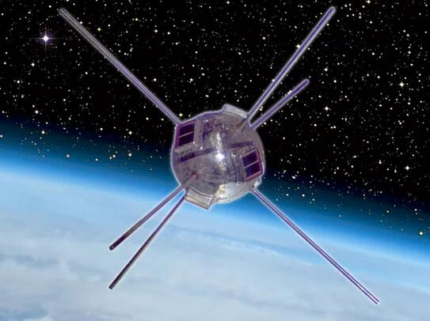
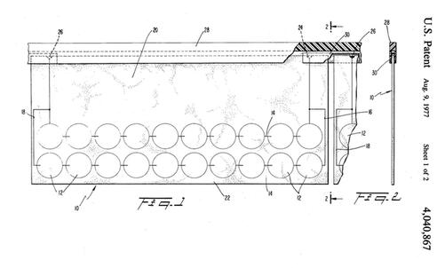
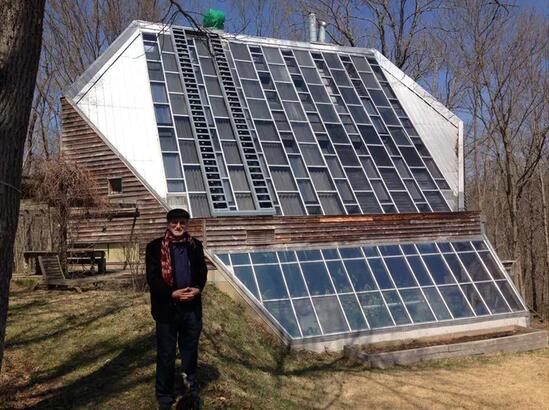
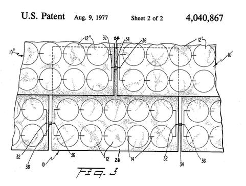
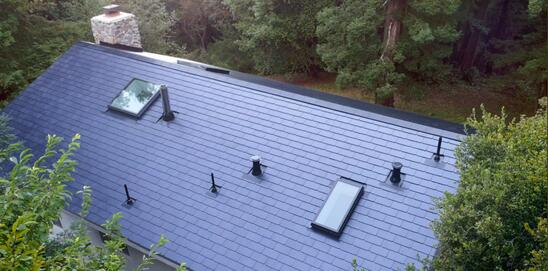

据Inverse报道，1977年8月9日，美国专利局批准了美国宇航局下属刘易斯研究中心三名研究人员的专利申请。这项专利可称为世界上最早的“太阳能电池板屋顶”，可为住宅提供电力支持。而整整40年后，特斯拉等公司才将太阳能屋顶变成现实。

为了实现这个目标，科学家们经过了漫长的探索。美国宇航局设计的原始太阳能瓦片可能是未来几年内可以实现“太阳能屋顶”的最早方式之一。1977年8月，《纽约时报》曾发文称，美国航天局收到多份有关商业开发太阳能瓦片专利的申请，但太阳能瓦片的想法在40年前可能过于超前。
3名设计太阳能瓦片的研究人员之一亚美利克˙弗雷斯蒂埃里（AmericoForestieri）表示：“的确有点儿激进。事实上，它可能不属于美国宇航局当时正在做的事情，因为我们毕竟是个太空组织。”但的确是美国宇航局首次发现了太阳能电池的实际应用。
直到1958年发射以太阳能为动力的卫星“先锋一号”，这些电池依然非常原始，效率也很低，对贝尔实验室的研究人员来说，它们不过是个玩具而已。即使太阳能在地球上还未投入使用，但它是为卫星提供动力的理想方式，这使美国宇航局成为太阳能研究的天然中心。

图2：这个小家伙——先锋一号是太阳能的先驱之一
然而，这并非意味着美国航天局处于即将发现实用、廉价太阳能的边缘，因为这毕竟不是摆在其面前的主要任务。格伦研究中心的太阳能研究人员谢拉˙贝利（SheilaBailey）说：“如果你投入了十亿美元建造卫星，其动力系统的成本就可能达到数百万美元，但这不是最重要的。你想要可靠、耐用、高效的东西，因为投入卫星的资源毕竟是有限的，你需要生产最有效的电池。”
但有很多时候，当美国宇航局聚焦于空间研究时，其技术与地球上的潜在应用相吻合。弗雷斯蒂埃里说：“我们知道太阳能电池，我们知道它们很有用，我们知道它们在地面上同样可用。”到20世纪70年代，人们对太阳能的兴趣变得日益浓厚，因为当时美国对石油禁运令天然气价格暴涨，许多研究人员开始认真考虑替代能源。
弗雷斯蒂埃里表示，他的同事安东尼˙拉塔伊恰克（AnthonyRatajczak）最先提出太阳能瓦片的创意。它以不同寻常的以地球为中心的理念脱颖而出，他说：“我们可以将这样的设备组合起来使用。我们知道它的效率很低，我们不认为它会达到今天的水平。但现在它已经被应用于全世界。”

图3：拉塔伊恰克、弗雷斯蒂埃里以及西多拉克共同设计的太阳能瓦片
拉塔伊恰克、弗雷斯蒂埃里以及西多拉克设计的太阳能瓦片十分简单：专利要求的太阳能电池阵列被放置在多种材料上，比如玻璃纤维布上，同时覆盖有防水、透明材料。他们利用常规屋顶的互相重叠的特性，使用边缘上的连接器在瓦片之间共享和传输收集到的能量。
太阳能瓦片的第三名专利研究员勒罗伊˙西多拉克（LeroySidorak）表示：“你必须在瓦片之间建立起电子连接，并且能够达到某种功率水平。”正如你在任何太阳能模块中做的那样，每块太阳能电池都需要通过某种方法与其他电池连接起来。然后你把它们叠加起来，因为当时每个太阳能电池只能产生不到半伏特的能量，为此你必须找到一种方法，以便最终达到你想要的功率水平。”
这项专利强调，这种太阳能瓦片不仅意味着可作为能源收藏器，而且本身也有普通瓦片的特性。在这方面，这种40年前的设计更接近于特斯拉现在所研究的太阳能屋顶，而不只是把太阳能电池阵列放在屋顶上。

图4：20世纪70年代肯塔基州的太阳能房屋
西多拉克说：“我当时认为，太阳能集热器只是把太阳能电池板放到屋顶上，但我们的想法显然是它的延伸。”西多拉克是3人中的材料科学家，这意味着他的工作就是将弗雷斯蒂埃里和拉塔伊恰克的设计变成现实。这不是最容易的任务。在他开始研究太阳能瓦片时，西多拉克已经能够把太阳能电池安装在坚硬的表面上（比如铝），以帮助保护它们。然而，玻璃纤维材料起初很柔软，所以可以用作瓦片。

图5：拉塔伊恰克、弗雷斯蒂埃里以及西多拉克共同设计的太阳能瓦片
找到合适的材料来保护太阳能瓦片也是一项挑战。毕竟，人们希望屋顶能够持续使用30年，可以抵御雨雪、热浪以及其他任何天气现象的侵蚀。相比之下，“先锋一号”卫星在太空的真空环境中相对容易，但在与地球失去联系之前，它只运行了6年时间。
最初的太阳能瓦片从未被放在任何人的屋顶上，但是研究人员确实在路易斯研究中心外的试验场上进行了试验。但这些试验毕竟有局限性，它们不可能持续测试30年，以证明太阳能瓦片在某人的屋顶上真实有效。但弗雷斯蒂埃里说，他们对试验结果表示满意。
弗雷斯蒂埃里说：“我认为，这项发明带给我们的启示是，我们想知道这样的东西是否能起作用。当我们把它连接起来的时候，我们确实发现，它们能够持续使用多长时间，在很大程度上取决于用安置它的材料，以及用来覆盖它的膜。他们几乎不受天气的影响，所以我们认为这是个好主意。
拉塔伊恰克、弗雷斯蒂埃里以及西多拉克设计的太阳能瓦片距离投入商用还有很长的路要走。特斯拉太阳能屋顶的初始成本约为50000美元，这还要减去各种税收优惠。这是相当昂贵的，但依然在富裕房主的负担能力范围内，尤其是当你在将30年的能源节约潜在因素纳入考虑之中。弗雷斯蒂埃里估计，2017年可能需要花费25万到40万美元安装太阳能屋顶，才能满足用户的电力需求。他说：“如果你不关心成本，我相信你会觉得这对房子有好处。但是成本毕竟很昂贵，当时我认为其效率可达5%，你必须要有足够的钱才能安装这种屋顶。”

图6：从美国宇航局太阳能瓦片中获得灵感的特斯拉太阳能屋顶
成本和实用性的问题可能意味着，1977年人们还没有为他们的太阳能瓦片做好准备，但2017年以后，可能证明这种技术的“精神后代”会迎来截然不同的故事。西多拉克说：“我认为这只是时间问题，太阳能电池正变得越来越好，功耗越来越低，而效率越来越高。”弗雷斯蒂埃里同样乐观，他说：“我对太阳能电池技术的快速发展感到吃惊，它不会造成任何污染，这是个绝妙的主意。”
美国宇航局太阳能瓦片的故事可能会出现一个完整的循环。贝利表示，这3名研究人员的初衷是尝试将基于太空的太阳能技术知识应用于地球屋顶上，并在将来能应用到地球之外的环境中。她说：“在火星或月球栖息地，这种太阳能瓦片将非常有用。这不是你应该忽略的技术，它可能是你在行星或月球表面上使用的东西。”
鉴于特斯拉电动汽车公司创始人伊隆˙马斯克（ElonMusk）自己也希望利用SpaceX建立火星栖息地，这种想法正激起人们对太阳能屋顶的全新兴趣。随着美国宇航局正重启地球轨道以外的太空探索，也许40多年前美国宇航局3名研究人员提出的太阳能瓦片想法会重新受到追捧。